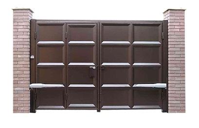
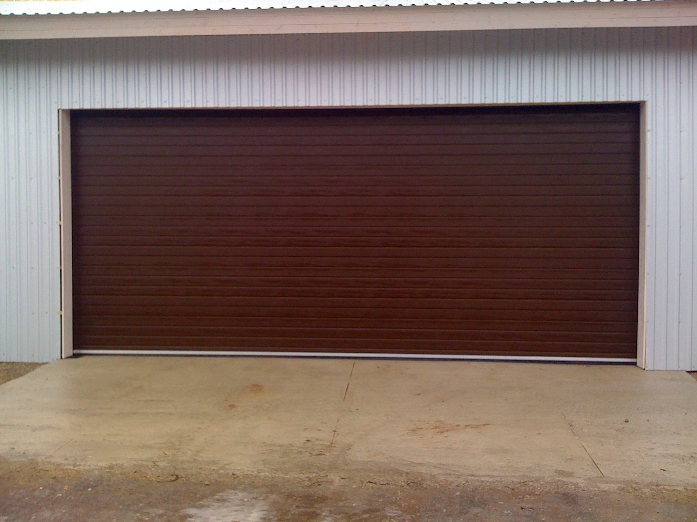
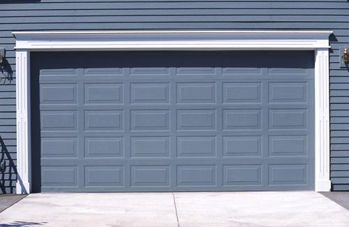
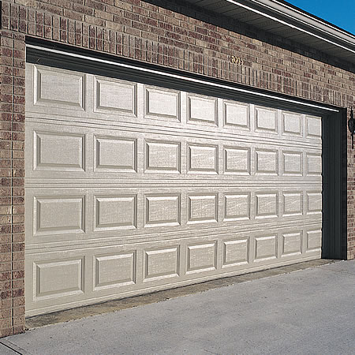

Гаражные двери и ворота
Гаражные двери и ворота
Где можно безопасно оставить свой автомобиль – очень волнующий сегодня вопрос. В повседневной городской жизни Санкт-Петербурга большинство жителей ставят свои автомобили на специальных паркингах или просто во дворе дома. Практически во всех новых строящихся домах обязательно есть подземные стоянки, но и они не обеспечивают полную защиту машины от различных ЧП. Обычно в гаражах машины хранят владельцы загородных домов, или частных гаражей на отдельно отведенных только под гаражи территориях. Если гараж защищен надежными воротами, то он, безусловно, является самым безопасным местом для автомобиля.
Мы предлагаем Вам изготовление и установку гаражных ворот и дверей из высококачественного и прочного алюминиевого профиля Alutech. Такие ворота обладают всеми эстетическими и функциональными свойствами для того, чтобы обеспечить хороший внешний вид гаража и отличную защиту автомобиля от всех неблагоприятных воздействий со стороны внешней среды.
Гаражные ворота и двери из профилей Alutech обеспечивают внутреннему пространству гаража безопасность, высокую теплоизоляцию и герметизацию. Несмотря на свою надежность и прочность, такие конструкции очень легки и удобны в использовании для своих хозяев. Они также не занимают много места, и их монтаж нисколько не уменьшает площадь Вашего гаража. Алюминиевый «рулон» двигается вверх при открытии, максимально сужаясь, и вниз при закрытии гаража. Еще одним плюсом при монтаже таких гаражных ворот и дверей является возможность установления системы электрического привода, благодаря которому можно производить их открытие и закрытие дистанционно, а не вручную. Если во время процесса закрытия гаражных ворот возникает какая-либо преграда, то специально настроенные датчики моментально ее определят и заставят ворота автоматически подниматься обратно вверх, не нанося вреда самой преграде.
Закажите установку гаражных ворот и дверей и оцените их преимущества сами! Мы рассчитаем Вам стоимость по заявке! Услуга популярна, цены доступны!